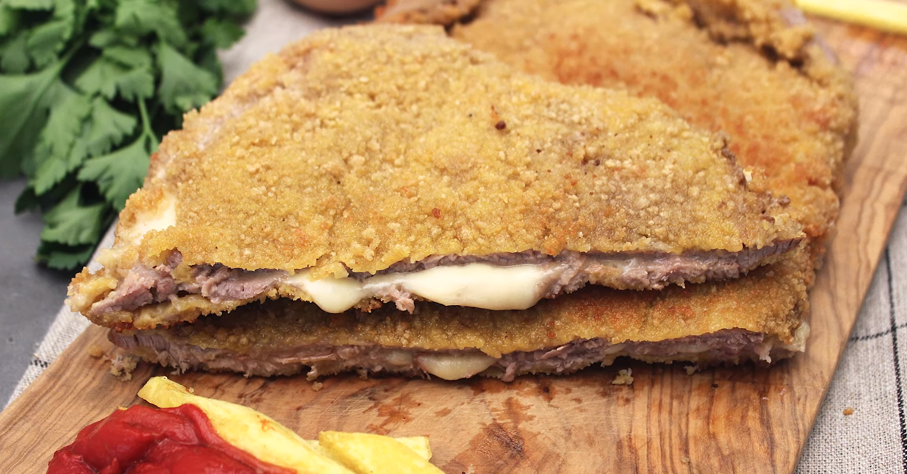
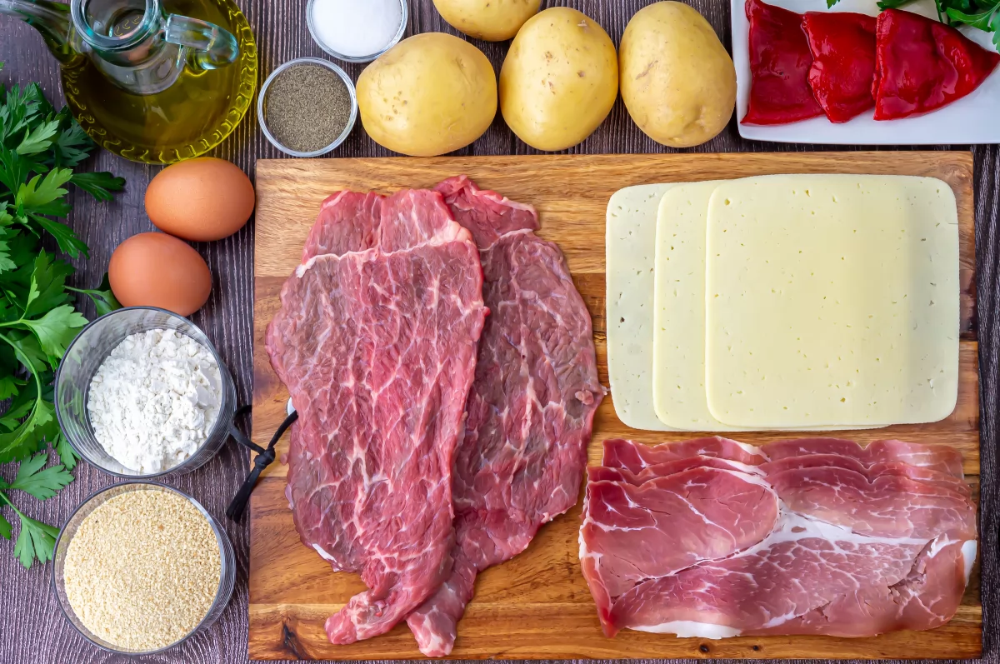
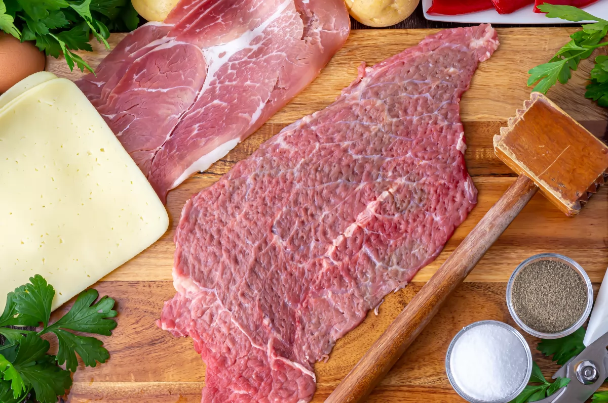
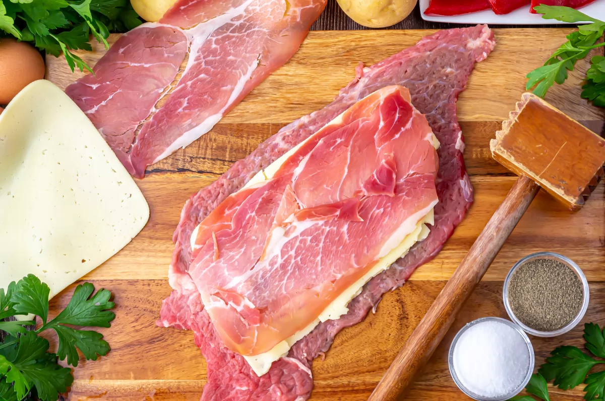
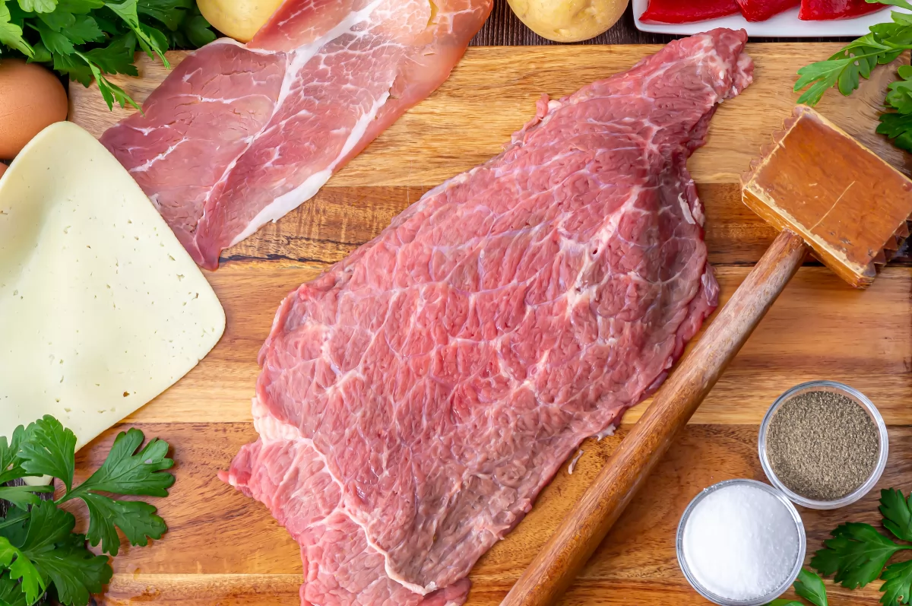
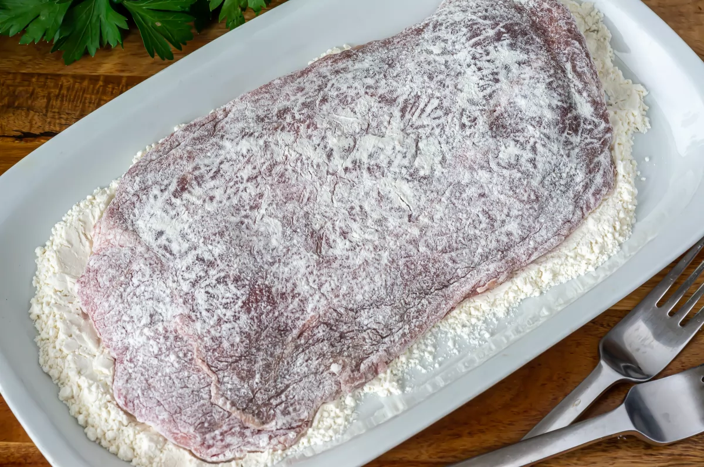
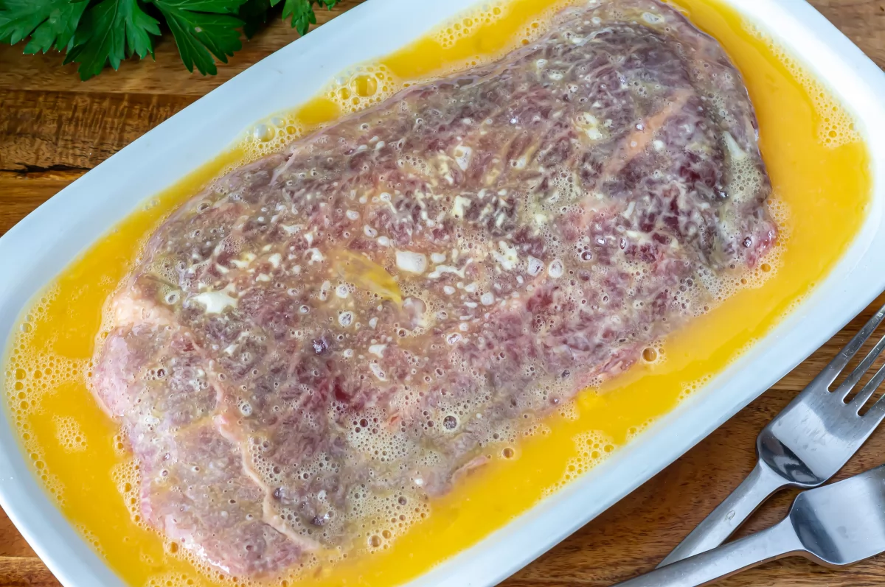
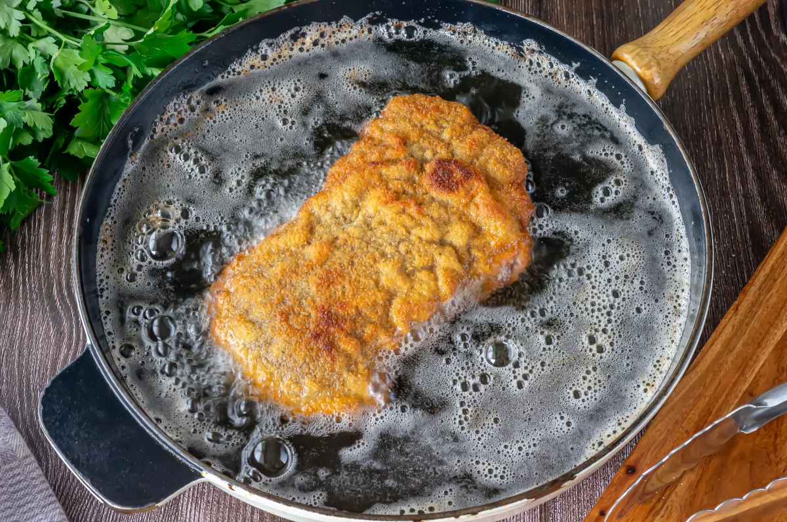
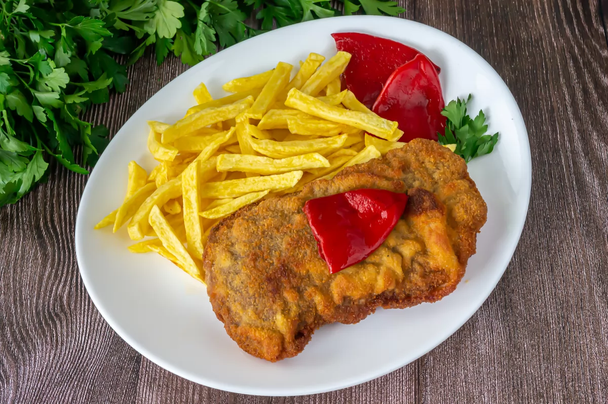

Cachopo asturiano
"El cachopo, un plato audaz, en Asturias nace y se hace sagaz. Jamón y queso en su interior, un abrazo de sabor, puro amor."

Ingredientes
- 4 filetes de ternera cortados dobles (unos 120 g. la unidad)
- 4 lonchas de jamón serrano
- 8 lonchas de queso (Queso de Oscos, cheddar, gruyere, Edam)
- Sal (al gusto)
- Para el rebozado: 100 g. de harina de trigo
- 2 huevos grandes y 200 g. de pan rallado
- Acompañamiento: 4 patatas gallegas grandes
- De manera opcional: 4 pimientos del piquillo
- Aceite de oliva virgen extra suave (el necesario para freír)
Preparación
- Preparamos nuestros ingredientes para realizar la receta de manera organizada y más rápida. En 3 platos disponemos la harina, el pan rallado y los 2 huevos batidos. Reservamos hasta el momento del rebozado. Usaremos un par de filetes por cada cachopo que sean aproximadamente del mismo tamaño y forma, para que casen perfectamente el uno sobre el otro.

- Los filetes de cadera son muy tiernos y perfectos para esta receta. Los limpiaremos bien de las telillas de los bordes para que no se nos «encojan» al freírlos. Los vamos a trabajar con un mazo o una piedra para ablandarlos y aplanarlos.

- Extendemos un filete y salamos al gusto. En una de las mitades colocamos una loncha de jamón serrano y sobre ella una de queso. Creo que una loncha de cada es más que suficiente. Hay quien mete dentro del mismo un pimiento del piquillo abierto. El pimiento encaja divinamente con el cachopo y con otros empanados, así que dentro o fuera estará igualmente bueno.

- Cerramos con la otra mitad del filete apretando en los bordes. Así conseguiremos que se una bien la carne y quede el relleno en el interior.

- Los empanaremos con el clásico rebozado, pasándolos por harina, huevo y pan rallado. La harina ayuda a que el huevo se adhiera mejor a la carne.

- El huevo actúa como pegamento para fijar el pan rallado. Hay quien da una sola capa y hay quien prefiere usar dos. Lo mejor es rebozar con una sola capa para que no sea demasiado grueso, así resultan más ligeros y absorben menos aceite en la fritura.

- Calentamos abundante aceite en una sartén y los vamos friendo a temperatura media-alta. Así evitamos que queden muy tostados por fuera y crudos por dentro. Los cocinamos de 2 a 3 minutos por cada lado, queremos conseguir un rebozado crujiente de color dorado, la carne en su punto y el relleno con el queso derretido sobre el jamón. Retiramos y reservamos sobre papel absorbente para que suelten el exceso de aceite.

- Como acompañamiento en la mayoría de los restaurantes asturianos podéis elegir entre muchos tipos de salsa. Por ejemplo, una salsa de Cabrales, salsa de sidra, cebolla caramelizada, salsa de tomate natural a la pimienta, verduras a la plancha o unos pimientos caramelizados al ajillo.

Información nutricional
- Calorías
- Un cachopo de tamaño promedio puede tener alrededor de 500-700 calorías, pero esto varía según el tamaño y la cantidad de aceite utilizado para freír.
- Grasa
- Puede contener una cantidad significativa de grasa, principalmente debido al empanado y al queso. Puede proporcionar alrededor de 25-35 gramos de grasa por porción.
- Proteínas
- Un cachopo suele ser rico en proteínas, con aproximadamente 30-40 gramos por porción.
- Carbohidratos
- Los carbohidratos en un cachopo provienen principalmente de la capa de pan rallado del empanado y pueden variar, pero generalmente contienen alrededor de 20-30 gramos de carbohidratos por porción.
- Fibra
- La cantidad de fibra en un cachopo es baja, ya que se trata de un plato principalmente de carne empanada y queso.
- Sodio
- Debido al jamón y el queso, un cachopo puede ser alto en sodio, con alrededor de 800-1200 mg de sodio por porción.